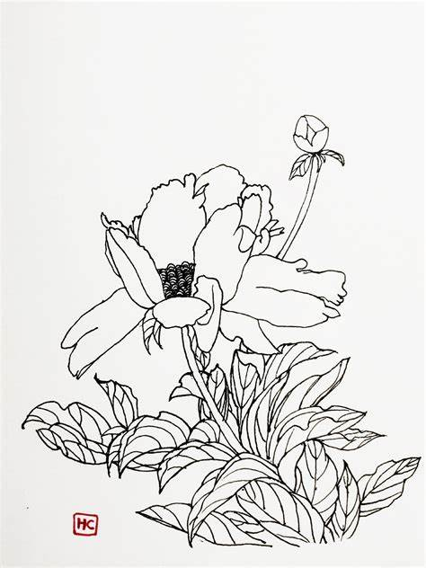

白描，中国绘画中，以淡墨勾勒轮廓或人物，而不设色者，谓之白描。白描于人物画之重要，见诸清沈宗骞芥舟学画编中所记：“画人物之道先求笔墨之道，而渲染点缀之事后焉，其最初而要者，在乎以笔勾取其形，能使笔下曲折周到轻重合宜，无纤毫之失，则形得而神亦在个中矣。”仅以线条便能将神态表达臻于完美。白描多半是中锋直悬的线条最难遒劲，故极易见画者之功力。历代画家名手辈出，传派各不相同，最有名之二者：其一，赵孟頫出于李公麟，李公麟出于顾恺之，此所谓铁线描之一系。如马和之、马远，则出于吴道子，此所谓兰叶描，为其二。此外描法尚有高古游丝描、琴弦描、行云流水描、钉头鼠尾描、橛头描、曹衣描、折芦描、橄榄描、枣核描、柳叶描、竹叶描、战笔水纹描、减笔描、柴笔描、蚯蚓描等，有依形状而名，有依用笔而名，各具特色。君友会王爱君美术文献记载中国白描画传世最著者，首推北宋画家李公麟所绘的《免胄图》。绘郭子仪免胄见回纥故事，线条遒劲园转，为李公麟画中精品。然而，近代也有白描花卉、鸟兽画出现，白描技法，并不局限在人物画方面而已。
白描不著颜色，有时可以用一些淡墨来略加渲染，具有独特表现形式和造型规律，并富有韵味。白描用线变化很多，要与造型形式美紧密相连，其线条或刚健、或婀娜、或轻灵、或凝重，由于用笔多变所以产生极为丰富的感觉。用白描来造型的特点是清晰、简练，可以完美地刻画各种现象，表现出千变万化的各种物象。
国画白描作品大多数是以单纯的线条勾勒作为造型手段，无论是工笔画还是写意画，或者是人物画，都是以线构成，借线的粗细、长短、曲直方圆、轻重缓急、虚实疏密、顿挫刚柔、浓淡干湿在造型上生动运用和有机结合，表现形体质量感、体积感、动态感和空间感，是在对自然物象深刻理解的基础进行主观创造，从而达到抒情表意的目的。
国画白描画法要特别注意“朴素简洁”、“概括明确”的特点，在构图上取舍要力求单纯，对虚实、疏密要偏重于对比较强烈的安排，层次要分明，线条处理上要带有装饰性、旋律性，防止碎乱、呆板、松散等弊病。
宋代画家李公麟把白描从草稿发展成独立的画种，他的白描变化无穷、丰富多彩，如行云流水，用富有表现力的单线创造出朴素优美的艺术形象。他所画的《五马图》，人和马都用单线勾出，比例准确，肌肉、骨骼结构明确，甚至把马的毛色所具有的光泽也细致地表现出来，形态生动，是古代一流的白描作品。
除此之外，明代陈洪绶的《西厢记》插图、《水浒叶子》插图，清代改琦的《红楼梦》插图等，虽说都是版画，但都是以白描为稿子刻成，流传至今，成为后人学习的典范。还有顾恺之、武宗元、梁楷、王绎、张渥、任伯年诸家都擅长白描。他们的出现，丰富了中国画的绘画语言，形成了一种独特的艺术风格，标志着中国画线描技法的高度成熟。